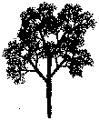
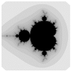
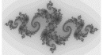
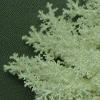

Here we survey more examples of self-similarity and its variations.
|  | Naturalistic fractal forgeries: with rules only slightly more complicated than those used to build the gasket, we can construct reasonable forgeries of nature. Later we shall see much better fractal forgeries of natural scenes. |
|  | The Mandelbrot set: a different nonlinear transformation gives the most famous of all fractals. |
|  | Julia sets: relatives of the Mandelbrot set. |
|
Fractal landscapes: With more sophistication (and computing power), fractals can produce convincing forgeries of realistic scenes. These examples were generated by Ken Musgrave. |
|  | Fractals in nature: after looking at so many geometrical and computer-generated examples, here is a short gallery of examples from Nature. |
| Fractal paints: how to make fractals with fingerpaints. |